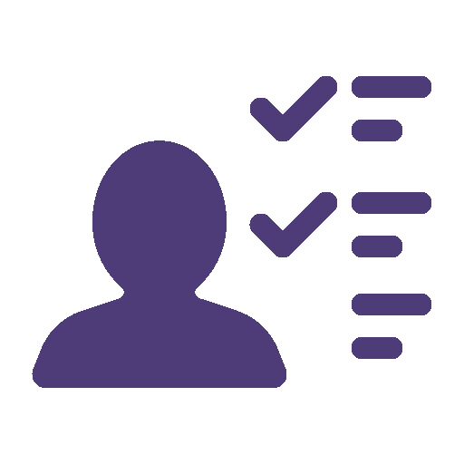
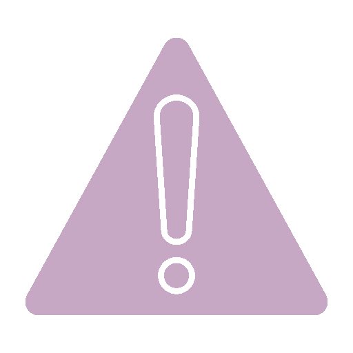
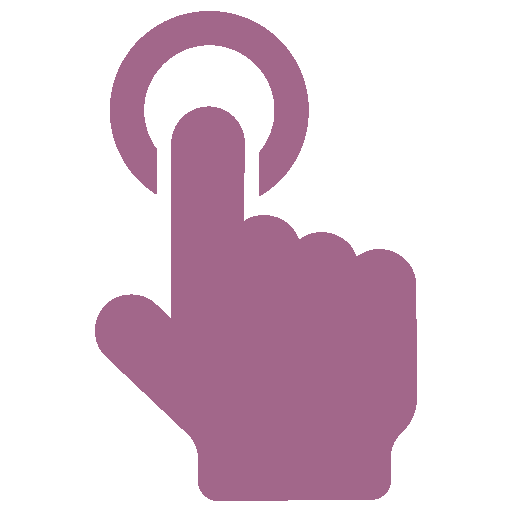

Освітній ШІ-репетитор у твоєму Telegram
Сьогодні навчання може бути досить непростим. Але тепер поруч є ШІ-репетитор, який допоможе розібратися в будь-якій темі, вдосконалити знання з предметів та зробити процес навчання захопливим.
Чому освітні втрати важливі
Війна та карантин спровокували значні освітні втрати, оскільки школярі та студенти були змушені пропускати уроки. В Україні ці втрати оцінюються у 5,5 мільярдів доларів. Через це учні ризикують втрачати до 1400 доларів річного доходу, а за все життя ця сума може досягти 25 тисяч доларів. У разі закриття шкіл у всьому світі на 5 місяців вартість навчальних втрат становитиме 10 трильйонів доларів
Що вміє бот
Наш ШІ-репетитор створений для того, щоб допомогти вам подолати прогалини у навчанні. Він оцінює ваш рівень знань, визначає слабкі й сильні сторони та створює персоналізований план навчання саме для вас. Усе відбувається у зручному форматі,який включає відео, тести, інтерактивні завдання та елементи гри, щоб навчання було не нудним, а справді захопливим. Бот пояснює ваші помилки, пропонує вправи для їх виправлення та регулярно показує ваш прогрес, щоб ви могли оцінити свої досягнення і зрозуміти, над чим варто працювати далі
-
Для студентів (18-24):
Надаємо підтримку у вивченні складних тем, адаптації до академічного середовища або покращення навичок тайм-менеджменту.
-
Для підлітків (12-17):
Учням середньої і старшої школи допомагаємо заповнити прогалини у знаннях і зробити навчання легшим і цікавішим. не
Чому варто обрати саме нас?
-

Персональний підхід
ШІ-репетитор адаптується до ваших потреб: спочатку оцінює рівень знань, а потім розробляє персональний навчальний план, який допомагає охопити всі необхідні аспекти
-

Пояснення помилок
Бот не лише дає відповіді, а й допомагає зрозуміти, де ви помилились, і підказує, як це виправити
-

Інтерактивність
Навчання стає цікавішим завдяки інтерактивним відео, тестам і різноманітним завданням, що роблять складні теми більш доступними та зрозумілими
-
Гейміфікація
Навчальний процес стає захопливою грою: рівні, нагороди та досягнення мотивують рухатися далі
Support title
Support text